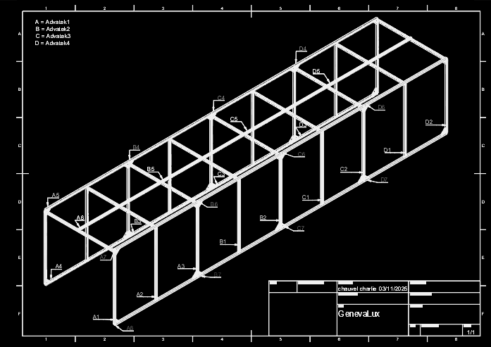

I build real-time audiovisual systems where sound, data and code become image, light and spatial behaviour.
The practice moves between creative coding, live audiovisual performance, interactive installation and media-system integration — from laptop-scale software to architectural LED, projection and stage environments.
creative codinglive AV systemsinteractive lightprojection / media systems
A realtime image study where portraits and graphic forms collapse into a reduced alphabet of pixels, symbols and colour fields — moving between legible faces and computational abstraction.
Role concept / visual system / programmingContext solo realtime studyTools TouchDesigner
Realtime portrait state
Reduced portrait fieldSymbol / colour state
System
Realtime generative image
Role
Concept / visual system / programming
Tools
TouchDesigner
02
Solo project / 2026
Snake / Networked Retro System
A software-first TouchDesigner game system combining classic Snake logic, music synchronisation, custom UI, an online leaderboard and database integration. Built as a complete solo system rather than a visual effect.
Role concept / programming / visual directionSystem game logic / music sync / online leaderboardTools TouchDesigner + database integration
Gameplay / live stateMenu / identityTouchDesigner network
Collaborative public installation / Geneva Lux / 2025
LUMINA
A 12-metre interactive light environment developed with StripLab for Geneva Lux. My role connected structure, fabrication, realtime software and integration: Fusion 360, network planning, LED architecture, TouchDesigner programming, budgeting, workshop coordination and on-site setup.
Role Creative Technologist / Realtime Systems & IntegrationContext Geneva Lux / public space / multi-year operationSystem TouchDesigner → Art-Net → addressable LED architecture
TOUCHDESIGNER→ART-NET→4 CONTROL ZONES→8,556 LEDs→SPATIAL LIGHT
Design / fabrication / transport
One system, from drawing to reinstallation.
The project documentation covers structure, grooved timber profiles, LED integration, network/control architecture and a dedicated flycase. The viewer below keeps the technical depth visible without turning the portfolio into an engineering dossier.

01 / STRUCTURE + ASSEMBLY
04
Research series / 2025
Realtime Studies
Two separate audio-reactive studies exploring material behaviour, cellular structure and temporal response. Presented together as research, not merged into a single artwork.
Format two independent studiesMethod audio-reactive / cellular systemsTools TouchDesigner
A
Audio-Reactive Material
Realtime surface and particle behaviour driven by sonic structure.
B
Game of Life / Audio-Reactive
Cellular logic used as a visual field rather than as a decorative overlay.
05
Collaborative project / Hardwinner / 2016
AMEN / Realtime Church AV System
A church-scale audiovisual system developed from simulation to live deployment: realtime 3D visualisation, custom show control, TouchDesigner, LED / DMX / video control and technical fabrication.
Role core creative & technical contributorSystem realtime 3D / show control / LED / DMXTools TouchDesigner / Resolume / Python
01 / TouchDesigner + realtime 3D / show-control development02 / architectural lighting test / system behaviour03 / live architectural deployment
A sequence of live systems and AV identities spanning festival, club and stage contexts — combining lighting behaviour, LED surfaces, visual direction, TouchDesigner / Resolume workflows and realtime show-control logic.
Role core creative & technical contributorContext Grenoble / club + electronic-music stagesTools TouchDesigner / Resolume / GLSL / DMX
2016 Dave Clarke / Grenoble / LBE — LED + light system2016 realtime light control / BPM / operator interface2018 La Belle Électrique / TouchDesigner + GLSL + Resolume
07
Solo study / 2018
Cloud Processing / Anisotropic GLSL
A cloud timelapse transformed through anisotropic GLSL processing in TouchDesigner — shifting between recognisable atmosphere and a painterly field of directional colour.
Role solo visual studyMethod anisotropic image processingTools TouchDesigner / GLSL
processed timelapse / displayed close to source resolution
pastel diffusiondirectional colour state
08
Solo system study / 2017
TouchDesigner AV System
A spatial audiovisual system study combining LED-screen logic, light, SoundFX and realtime audio analysis. The visual language uses repeated luminous frames to turn a flat output into an architectural tunnel.
Type realtime AV system studyMethod light / sound FX / audio analysisTools TouchDesigner / Resolume
09—11
Selected theatre / stage systems
Production depth without separating software from space.
2023—24
Grand Théâtre de Genève
SMODE programming, cue creation, projection integration, monumental soft-edge work and on-site calibration across multiple planes using very short-throw optics.
SMODEprojectioncuescalibration
2021—23
Comédie de Genève / Christiane Jatahy
Entre chien et loup — Régisseur vidéo & interactive designer / touring video system. Preparation and adaptation to each venue, coordination of local technical teams, multilingual surtitling, testing / troubleshooting and written handovers for autonomous operation.
video systemtouring adaptationteam coordinationsurtitlinghandover
2016—17
Stage Systems / Fun Radio + “National Radio”
Fun Radio Party / Chambéry — 2016: stage design and live show, TouchDesigner / Resolume, video-light colour synchronisation and live deployment in front of the audience. “National Radio” — 2016–17: P3 LED-screen and DMX stage-design studies, realtime simulation, video routing and lighting-control development.
TouchDesignerResolumeDMXLEDvideo / light sync
Fun Radio Party / Chambéry / live result“National Radio” / Annecy / realtime stage simulation
12
Selected R&D / 2016—2025
Selected technical research behind the work.
Kinect / mapping / custom show controlsensor input, stage simulation, UI, DMX / video routing
Stable Diffusion / Unreal Enginegenerative image and realtime 3D experiments
Millumin / Analog Way / Companionmedia-server, routing and show-control integration
Current direction / 2027
Portable solo practice. Software-first. Festival-scale in sound, projection and space.
The next body of work is designed to travel light: a laptop-scale core that can expand through the technical infrastructure available on site rather than depending on a fixed touring installation.
solo-operablerealtimesite-scalablesound-responsivelow transport loadfestival-ready
Profile
Digital artist & creative technologist.
Digital artist and creative technologist working across creative coding, interactive light, projection and realtime media systems — from solo software studies to public installations and touring theatre systems.
Selected contextsGeneva LuxFestival d’AvignonOdéon–Théâtre de l’EuropeComédie de GenèveGrand Théâtre de GenèveLa Belle Électrique